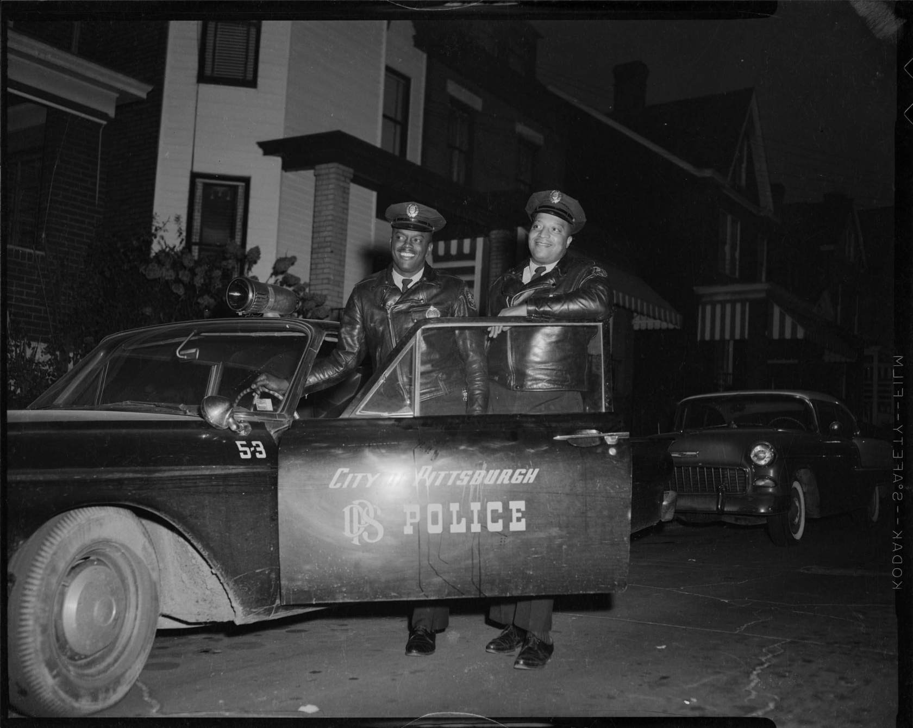
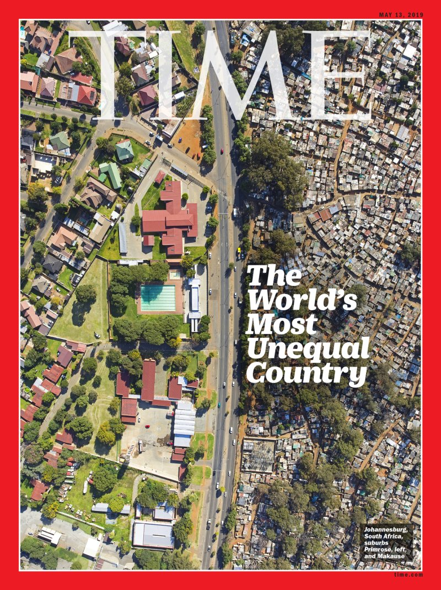

Humans are composed of thousands of arteries that distribute supplies and information to every single cell. These uncountable processes take place in every being that habitats this world. It makes it even more surprising that the structures humanity created seem so similar to its bodies. In some aspects, it could not be in more excellent contrast to
All of these mechanisms are fascinating and happen on many levels. As the most elaborate examples of Infrastructure, cities illustrate the complexity of dependencies in the best way. That is probably why city-builders video games are my favourite kind. To win, one tries optimizing profit and development of their settlement. The always apparent struggle between earning and achieving personal goals never leaves the player. Flourishing in the game means keeping the attractiveness of the city high. Increasing the level of security and finding employment are some of the main factors in achieving that. As one builds and tries to keep everybody happy, realizes one thing - it becomes visible where the poorer or less educated population lives. It does not make sense to invest there. One maintains the status quo - no profit means losing - and struggling with meeting the wealthy citizens' needs is already hard. Unfortunately, playing on and taking the role of God's hand, one observes that people's reality is becoming grimmer and grimmer. They are just another number when deciding where to put the next school or a bus stop. Somebody has to be left out; it is impossible to make everybody happy. The sad actuality is that in the game where one can stop time and carefully consider the best solution, most players imitate the cold decision-making process known to us from the real world.
According to this definition by the Oxford Dictionary, the specific elements of this vast system seem to be enormous and far away from an individual's everyday life. However, that is a deceptive idea - Infrastructure is part of our lives in many more moments than we realize.
as Jeffrey Fulmer described Infrastructure, again, suggests that the phenomenon is enormous. Nevertheless, if one starts looking at their everyday activities, they shall observe that its small components are all around: the sidewalk that takes them to school, sewage that follows the road, a bus stop, high voltage lines, and a bike lane. Fulmer's definition provides a closer idea of what the infrastructural mesh of elements is supposed to do - provide for society. Whether it is providing services or enabling the population to move around attending their business, one thing is exact - it is for people. When humanity outlived the small community lives a long time ago at 7500 BCE starting the first cities, humankind also realized the need for structures to order functioning of the significant settlements. As none of the first civilizations managed to make all their decisions collectively, citizens gave up that power to their representatives. Humanitycannot agree on something quickly and efficiently. The domineering system used to be a monarchy - the regime rule of an individual, but with time most of the planet managed to work out some form of rule of many - democracy. None of the ruling systems is, of course, free of flaws but made us remain on this planet for the past couple of centuries. Depending on where one lives, the components of Infrastructure can be more or less obvious. In the city, it is easier to point them out as they mostly appear in large quantities. There seems to be little of them in areas with lower residential density, but that might be deceiving. It is also easier for some people to focus on the working ones or maybe the opposite - not working, or even worse - non-existent. It appears evident that inadequate Infrastructure or a lack of it would be quickly associated with poor and remote areas. Many socio-economic and spatial factors define it. It is tough to describe them all, but the most interesting are the ones that connect economic status, demographics, and how they influence the community. One of the biggest problems caused by inefficient and poorly planned Infrastructure is creating a disadvantage, total restrain of accessibility, and constitutional inequality of opportunity. Following professor Tomasz Komornicki's statement in an interview for Interia, this problem does not have a simple solution. Following utopian visions of public transportation accessible to everyone, everywhere, and at any given time is nonsense and not what society needs. In the interview about the state of transportation infrastructure in Poland, he replies to one of the questions in the following manner (please, find English translation below):
Moreover, to solve those problems possible, there needs to be Infrastructure allowing public transportation to function efficiently. It ought to meet the demand of the unprivileged side of the society and make it available to access all necessary facilities like schools, shops, or service points. The logic behind a well working system is to fill in the gaps existing because of money deficiency. That opens not only educational but also financial opportunities in the shape of making commuting to a more suitable school or better-paid job possible. Looking for a solution is not as easy as many factors influence it. Many, such as the social-democratic EU parties, argue that the governments should provide means that would fight those negatives. On the other hand, it seems impossible to do so in a capitalist world without engaging the private sector and everything-ruling corporations. Why is trying to find better solutions to that problem so important? This paragraph from UN's The Infrastructure – Inequality – Resilience Nexus summarizes it pretty well:
So inequality of opportunity caused by the scarce Infrastructure can cause entire populations to polarise, therefore causing disturbance not only in the lives of individuals but entire countries. In his book 21 Lesson for 21 Century, Yuval Noah Harari argues that unrest in the unsatisfied parts of the population that feel neglected by the in power personas cause a lot of contemporary politics' significant events. An excellent example of that would be elections in the US in 2016 and Donald Trump's success in becoming the president. In the same year, in September of that year, right before the voting, Richard V. Reeves wrote for Bookings:
So following Harari again, many people felt left out and neglected by the system. According to Bloomberg's report on that election, Trump voters fit one or more of the following characteristics: male, white, middle-aged, older, low-income citizens. Another reason for the deep divisions in American society can be pledged to the redlining phenomenon that was common and legal till 1968. It was a systematic denial of services or goods to people of minorities. As Mitch Mc Ewen argues in her article "Another Architecture" its influence was negative on society's already discriminated parts and enforced segregation. Not only based on race or appearance but also later that created enclaves of people of similar beliefs. That would easily encourage the strengthening of radical ideas within communities. Then again Bloomberg’s report points out that members of these social groups felt particularly mistreated by the Democratic party. Although experiencing hardships, they were not the target receivers for any of the social programs. Mr Herrari thinks that could have been avoided by not branding the social programs as focusing exclusively on minorities, but would the organization gain as much politically? That question remains. The story of Verband der Automobilindustrie pressuring the German government and its influence on Infrastructure is another one that gives a good understanding. VDA, as it is called otherwise, is a lobby group for German carmakers. Its persuasive power on the lawmakers comes from the fact that the automotive industry is the one that generates one of the most significant revenues and employs around 830,000 citizens. Because of that, it is widely accepted that its members are involved in decision making on all levels of German politics - from European Union sanctions to building a bridge in the right place. It has been confirmed that politicians with ties to VDA stopped new environmental restrictions or law proposals like lowering speed limits on Autobahn in 1995 and diplomatically smoothing the consequences for Volkswagen for breaking EU emission regulations in 2015. Unfortunately, all of those examples discussed so far create the Perpetuum mobile of today's infrastructure problems. Therefore, the profitable one created by commerce gives it more influence, and the needed but unprofitable one is created only when there is an apparent political gain visible. As an excellent example of that, I can give my own country described by Olga Gitkiewicz from her book about communication exclusion in Poland:
Firstly an example that seems to marry insufficient Infrastructure with a lack of essential service. Firstly an example that might seem to be more about the lack of service rather than Infrastructure. It is a story of racism accompanied by tremendous inequality that has laid the ground for interracial and social class conflict and made it even worse as a final result. In the 1960s and 1970s, in the USA black population as a whole, but specifically black men had a problem influencing their entire community. To picture it, we will explore a story that is the best archived - Pittsburgh's Hill District's precedent and its Freedom House Ambulance Service. The Hill, as a district of the city, had a bad reputation. There was a considerable unemployment problem, which made drug and alcohol addiction worse than it was before. Many men, not only stigmatized by the previously mentioned inclinations, had a hard time finding reliable jobs due to broader economic issues influencing the entire United States. Most of them did not have a steady income and struggled because of that. When they found a more substantial employment form, it was often in public institutions working as janitors or fulfilling ungrateful and straightforward tasks. Moreover, most of the men were in disadvantageous positions in getting jobs because of their race, and the white population of the United States had broadly kept their racist sentiments, at least at that time. After racial segregation became outlawed in 1964, it took much more time for society to adjust to new fair social norms. However, this problem for at least some of them got fixed by another problem - lack of specific Infrastructure. Furthermore, ironically, it was not felt only in the Hill district but in the entire Pittsburgh area - lack of sufficient transportation for people in medical needs. Hospitals and clinics were in place to help cure the population. There was only one issue: to save someone's life, that person needed to be near the doctor. The biggest problem was getting people in urgent need of medical assistance - participants of a road or domestic accidents, people with gunshot wounds, and people with a heart attack - into the institutions' proximity. According to professor Komornicki, this could be fixed in two ways - depending on what is more advantageous financially. One can bring the needed institutions and services to people in need - in this case, build more hospitals, but the second solution seems to be more successful - to organize infrastructural connections that bring people to central points of the community that provides the mentioned above utilities. It is deemed more beneficial not only financially but also more efficiently, as a bigger hospital can employ a wider variety of specialists and provide a higher level of service. The Pittsburg case might seem a problem with a straightforward solution. Why not bring patients to the hospital by a very well known means of transportation - an ambulance? The answer is simple - at that time in history, no such thing existed. Their family members mostly brought people in or, if the patient was picked up from a public place, then the police or fire department did it. That presented a few problems because if one did not own a car, then relatives would have to call the police if the accident happened at home. That created many delays and also made the police force busy with cases that were not their domain. Policemen complained about this and about having no knowledge or training; therefore, the whole operation was always terribly scary. There was no luxury like the smart modern equipment available now like the Automated External Defibrillator to help an inexperienced person save lives. That caused a huge psychological burden on the policemen, but that aspect was taken lightly by the deputies.
Another thing that needed attention and got none were the police vehicles that served as transportation for patients. To some, it might appear as a comfortable way to move around. However, one must imagine themselves with a heart attack on the back seat of it, alone, because the police officers by protocol should remain seated at the front, speeding through the streets with no seatbelts struggling to remain alive while being saved. A heart attack remains one of the least extreme examples of police transport missions. Indeed, better transportation methods were in need, and that is where another solution came in place - morticians. In some places, state or county authorities decided that it was too problematic and chaotic for people to call police or firefighters on those occasions. The perfect solution was to call a funeral house and transport living people in need of medical help in a hearse. As much as it sounds like a literal joke, it was not, and the sheriff's office in one of the districts commented that at least that was a better car to lay people down. In case the condition was fatal, at least the right services were already there. There was urgency for specific service providers. People who would be able to get to the patient fast, stabilize, and transport them to the hospital without further risking their lives. Moreover, nowhere was that need more apparent than in the low-income Hill district, where the white police force was slow to respond and met with a general lack of trust in police. The community was reluctant to call in. It affected Pittsburg, but the issue was recognized and addressed in a 1966 White Paper addressed to the government and pointed out that 50 thousand people die on American highways every year. Although combat medics experienced in a scene emergency medicine were willing to work on solutions, nothing was done.
The problem affected the black people disproportionately more than the other Pittsburgh districts, and Philip Hallen, a community organizer, has fast realized it. He ran a civil rights organization called the Maurice Falk Medical Fund, which challenged institutional racism in a medical organization. That made him note the issues with making him look at emergency services. He approached the Freedom House organization, which provided fresh grocery delivery service in the Hill area. That made him realize that the organization's trucks could help transport patients from that area to the nearest hospital. The system was already there; what it needed was maybe more trucks and drivers employed from within the community. Under Hallen's persuasion, Dr Peter Safar, the head of anesthesiology at the University of Pittsburgh, joined the new project. He did so with much devotion because he already preached the importance of immediate help at the side. Nevertheless, without much effect till then, because the medical community had a negative opinion on how much a bystander without extensive medical training would help the patient. Nevertheless, doctor Safar enthusiastically took care of preparing a course program that would train the drivers. The entire organization was an example of how the local government did not meet the infrastructural needs and ignored its obligation towards African American citizens. Because of that, they organized themselves and decided to satisfy them on their own. It is still a terrifying concept to think that has been their reality. Although they became citizens of the same importance to people responsible for modernization and safety, they remained irrelevant. That also amplifies how they were deemed unimportant; in political games, they received no attention. There was a group of men assembled and branded with the name Paramedics. A profession that changed the face of emergency medicine and brought it to where it is now. All of those Paramedics in the city of Pittsburg were black men. The same ones were called "unemployable" before they were given a career that made them proud. In 1970 at Freedom House, an Ambulance Service started. The organization claims to be the first of its kind in the world. Not long after starting operation, it became an immediate success in its community. Finally, people living in the Hill district were not scared to call in for help and could receive it on time. After operating for a few months with such success, the Ambulance Service got more volunteers to become paramedics, making it possible to operate on a bigger scale. They started helping people outside of the initial area and soon could cover almost the entire Pittsburgh city. That did not occur without particular difficulties. First of all, the white population was much suspicious of the new black-only taskforce. Some people refused and informed that they would rather wait for the police or morticians to arrive. The Ambulance Service gained in the public eyes after a few accidents in which they confidently and professionally helped victims and assisted them safely to the hospital. The second difficulty in operating was that nobody from white neighbourhoods would call the service first, and police refused to share the incoming calls for help. Paramedics installed radios in their ambulances that would pick up police frequencies and infiltrate the channels to know where they were needed. The sad part of that fantastic story is that the problem created by the state and city governments' incompetence and systematic racism had to be solved by the community's force. In the ideal world, the power party would thank the volunteers and originators and hold them in high regard while increasing the budget and supporting this beautiful organization's widening scope. However, that would have been "too beautiful to be true." Most possibly, that is why the local government overtook the Paramedics program. All of the original paramedics were fired. The procedures and courses were copied, and white men were trained to do the same jobs as their predecessors of colour. That new ambulance service organization also claimed the cars and available equipment. The African American community of the city of Pittsburgh became marginalized and remained without professional help. That enraged the community that had to scramble to establish the service in the first place. When it became vital for Pittsburgh citizens of any, it became a valuable political asset to be claimed.
The quote above is an introduction to a South African government website to promote its country. It is painting a fairytale-like destination's image targeted towards western tourists. The focus point is the country's cultural richness, which might be connected to the visitors' ancestors. However, that is only because they could be the ones that colonized the land hundreds of years ago. Following Instagram accounts, youtube videos, and websites sponsored by the Department of Tourism of the Republic of South Africa, one can only wonder how thrilling it has to be. Visit the Kruger National Park and observe the lions, hike the Drakensberg Mountains with their Golden Gate Highlands National Park 2200 meters above sea level. For the less fit top of Table Mountain can be reached by cableway. From there, one can wonder over the incredible view of the city below - Cape Town. It is recommended to take a good look and take some pictures - excellent that from such a high one cannot see too many details. Then learning about the city's history - nowhere better to do so than the Iziko Slave Lodge - a museum established especially to explain the city's complicated slave trade origin. Another checkpoint is Robben Island, where one will hear about how Nelson Mandela had a dream. All of that with nothing but honest smiles from one's tour guide that parting with is not an option. Taking selfies, enjoying food, #lovesouthafrica, and so on are expected from every tourist. Staying near trip stuff and not leaving the hotel district is too. Suppose any tourists wonder why they will hear about dangerous parts of the city, crime, kidnappings, and high crime levels in certain parts of the city. No one denies that cities as big as Cape Town have their dark and darker alleys. That is true for most of them. However, sometimes one should wonder if the forbidden parts are not prescribed for a different reason. Maybe they would destroy the subtle image of the Rainbow Nation? Bring to its knees the liberal democratic facade built for more than 25 years? Expose exterior propaganda of multicultural and multiracial peaceful enclaves degenerating Nelson Mandela's dream?
To understand the conflicts dividing the South African population, we need to dive into the county's history. Nevertheless, not done as on Wikipedia where - at least on the English site "South Africa" one can read a lot about its discovery by white men rather than pointing out that native tribes were inhabiting the land for centuries before. Most of what is written in the West history books focuses on the struggle in search of a route to India and how the Dutch settled there and then fought the British for it. Some of them will brush over the slave trade, which is what made Cape Town and other cities of the region so "culturally rich." The Dutch East India Company, the first megacorporation in history, should take most of the credit. Effects of that were significantly felt even hundreds of years later, in 1949 when together with the first apartheid law, the Prohibition of Mixed Marriages Act, a new dark era for South Africa has started. This act and the following ones made it legally and practically impossible for black and white citizens to marry or live together and use the same facilities. As one could already realize, it was "in favor" of the white population having broad access to all public services. Next year the population got classified as specimens in a botanical journal into "white," "black," "coloured," and "indian." Policies effectively segregating people in folders of ministries bureau and "shelving" them to certain cities' districts were a follow-up. The same happened all around the country but had the most dramatic effects in Pretoria and Cape Town. Trevor Noah, a South Africa comedian growing up during that time in Johannesburg - South Africa's biggest city, described his experience in a book called "Born a Crime." He was born in 1984, and through the last years of apartheid, he vividly experienced its reality. He was born to a white father and black mother whom he lived with. The family could not have anything in the shape of what would be now considered a normal relation. As born mixed-race, or as it was called at that time in South Africa, "coloured" meant they could never live together in one house. Mr Noah considers himself lucky because his mother managed to hide him away from the police, and he was not taken away as it was a common practice reinforced by apartheid law. If it happened otherwise, he would be moved to a different district. One for the population of the same appearance as his own and placed in an orphanage. Segregation was based only on appearance. Mixing of races was unlawful therefore augmented by the Infrastructure of the city. Separate buses or even separate sides of the streets segregated by race were a reality for South Africans. The situation continued legally till the 1990's when by the historians of Rainbow Nation, the apartheid ended. However, in reality, it pretty much continues, and it is evident in the pictures by Johnny Miller. "Unequal Scenes" is his photographic project that depicts the inequality from the title by drone footage of cities worldwide, but it significantly started in South Africa.
This cover and story illustrated by it shocked people in the USA and Europe. Many believed that in 2019 South Africa abandoned its apartheid past and moved on to being that colourful country full of people that strive for equality. In this picture, the edge of an affluent suburban neighborhood (right) is cutting its visuals with a wall of trees and hedges from the unavoidable slums which inhabitants legally fight to remain where they are. Here the division is even more visible when one follows the route that we see dividing the two areas. On Google maps, there is no way to access the housing estate's internal streets on the left by any road connected to the settlement on the right. As professor AB Atkinson discussed in his book "Inequality: What can be done?" we observe the population's wealth difference on many levels. The contrast in opportunity is not only based on linear thinking - income. As is the case in South Africa, Cape Town, the same situation is duplicated in many, if not all, world metropolises. The segregation might be caused by different factors - racism, religious differences, urban planning - but it has the same results - low or no opportunity access. Lack of basic structures causes the "black, coloured and indian" populations to have fewer chances of obtaining education or more lucrative jobs. It starts from a very young age and effectively stops the development of the community. Children from the segregated districts have access to only a few schools, so no matter if there could be a better one to go to if even affording the fare is too much for a gifted child's parents. For many inhabitants of slums, getting a well-paying job might not be conditioned by their abilities or qualifications, which might have been very hard to obtain by being limited to a small area. The deciding factor might be the capacity to get to it in time from their home. A solution to that would be to move closer to the workplace, but social norms bound citizens to live in the race divided districts established decades before. If one can free themselves from that, it is only through substantial means that are unobtainable for most of the slum's population for reasons numbered in this paragraph - the circle is closed - before by apartheid law now inequality of opportunity deepening economic rift. In light of that, it is hard to comprehend how the South African government or any other recognizing it can say with full faith that apartheid finished a long time ago. The situation reminds one about the word "acquired" on most British Museum exponents - one sees it but does not acknowledge it.
In the introduction, I attempted to present a broader idea of how structural framework deficiencies embody opportunity inequality. I hope that the examples I provided present few but different ways in which insufficient Infrastructure does indeed shape our lives. It is hard to reflect upon it and not be in opposition because some communities or specific demographics are mistreated. The problem is very complex, and it is not a solution to blame it only on one aspect. As mentioned before, to improve, there has to be action taken on many levels, and as the Freedom House Ambulance Service has shown, it is not always the best to trust it entirely to the government. However, as it is in its duties, one might argue that the government should be striving to better its citizens' conditions, and every democratic entity should endeavour to improve the unfair situation. The most important part of it or the first step should be to recognize needs and research what would be the best way to meet them rather than searching for one that will give the best press. A teenage girl who lived in Hokkaido, the most northern tip of Japan, had commuted to school every day. Her train station was deemed unprofitable by the rails optimization team. Without a train she could not continue her education. The Japanese Railways empathically waited with closing the stop until she graduated. It is unclear if that story is true or how much of it is. I broke the rule of not bringing something new into a conclusion in order to finish with a story that brings hope and inspiration while looking for the solution. The governments are the only entities with enough power to become deus ex machina in current infrastructural struggles. I hope that, for whatever reasons, they will want to take that role soon.
ABSTRACT Barillé, Albert Barillé, director. Once Upon a Time... Life. Procidis , 1987. INTRODUCTION "American Community Survey." Bloomberg, 2017, https://www.bloomberg.com/politics/graphics/2016-how-trump-won/. "Global Sustainable Development Report 2016", Department of Economic and Social Affairs, United Nations, 2016. "Oxford Languages and Google - English." Oxford Languages, 2020, languages.oup.com/google-dictionary-en/. "Social Rights." Socialists & Democrats, 2020, www.socialistsanddemocrats.eu/socialrights. Barkin, Noah. "VW Scandal Exposes Cozy Ties between Industry and Berlin." Reuters, Thomson Reuters, 26 Sept. 2015, www.reuters.com/article/us-volkswagen-emissions-germany-politics-idUSKCN0RQ0BU20150926. Deutsche Welle. "Could 400,000 Car Industry Jobs in Germany Be Lost?: DW: 09.07.2020." DW.COM, 2020, www.dw.com/en/german-car-industry-job-losses/a-54089880. Fulmer, Jeffrey. "What in the world is infrastructure?". PEI Infrastructure Investor, 2009. Gearino, Dan. "Love Is Blind: How Germany's Long Romance With Cars Led to the Nation's Biggest Clean Energy Failure." Inside Climate News, 30 Nov. 2020, insideclimatenews.org/news/11062020/germany-transportation-auto-industry-volkswagen-tesla-clean-energy/. Gitkiewicz, Olga. "Nie Zdążę". Wydawnictwo Dowody Na Istnienie, 2019. Harari, Yuval Noah. "21 Lessons for 21 Century". Vintage, 2019. Gross, Terry. “A 'Forgotten History' Of How The U.S. Government Segregated America.” NPR, NPR, 3 May 2017, www.npr.org/2017/05/03/526655831/a-forgotten-history-of-how-the-u-s-government-segregated-america?t=1610393597544. Hotten, Russell. "Volkswagen: The Scandal Explained." BBC News, BBC, 10 Dec. 2015, www.bbc.com/news/business-34324772. Mac Gregor, Neil. "Standard of Ur." A History of the World in 100 Objects, season 1, episode 1-10, BBC, 2020. McEwan, Mitch. “The White Flight from American Democracy.” Archinect, 27 Dec. 2020, archinect.com/another/the-white-flight-from-american-democracy. Pietrzyk, Dominika. "Uwaga Na Białe Plamy Na Mapie Polski." Biznes w INTERIA.PL, 13 July 2020, biznes.interia.pl/gospodarka/news-wykluczenie-transportowe-to-nie-jest-problem-tylko-polski-ws,nId,4608756. Piketty, Thomas, and Arthur Goldhammer. "Capital in the Twenty-First Century." The Belknap Press of Harvard University Press, 2017. Reeves, Richard V. "Inequality Built the Trump Coalition, Even If He Won't Solve It." Brookings, Brookings, 2016, www.brookings.edu/blog/fixgov/2016/09/26/inequality-built-the-trump-coalition-even-if-he-wont-solve-it/. Chapter I Beras, Erika. "How Pittsburgh's Freedom House Pioneered Paramedic Treatment." NPR, NPR, 1 Mar. 2015, www.npr.org/sections/codeswitch/2015/03/01/389798498/how-pittsburghs-freedom-house-pioneered-paramedic-treatment?t=1606106455147. "Civil Rights Act, 1964: Legislative History." Publisher Not Identified, 1964. Gretton, Peter. "The Defence White Paper, 1966." Royal United Services Institution. Journal, vol. 111, no. 642, 1966, pp. 117–123., doi:10.1080/03071846609431298. Harris, Charles "Teenie." "Police Officers Leon Rhodes and Chandler Sermons Standing beside City of Pittsburgh Police Cruiser on Residential Street." CMOA Collection, CMOA, 2020, collection.cmoa.org/objects/16fab08f-a927-457c-ac6b-26578f605a4f. Hooks, Bell. "Ain't I a Woman: Black Women and Feminism." South End Press, 1991. Karns, Jameson. "Paramedics of Freedom House: Empowerment Through Paramedicine." EMS World, 15 Oct. 2015, www.emsworld.com/article/12127175/paramedics-of-freedom-house-empowerment-through-paramedicine. Karns, Jameson. "Paramedics of Freedom House: Empowerment Through Paramedicine." EMS World, 15 Oct. 2015, www.emsworld.com/article/12127175/paramedics-of-freedom-house-empowerment-through-paramedicine. Starzenski, Gene, director. Freedom House Documentary. Freedom House Documentary Trailer, GenaStars Productions, 2009, www.youtube.com/watch?v=hHUA0E3KYgA. Chapter II Atkinson, A. B. "Introduction." Inequality: What Can Be Done?, Harvard University Press, 2018. Baker, Aryn. "What South Africa Can Teach Us as Worldwide Inequality Grows." Time, Time, 2 May 2019, time.com/longform/south-africa-unequal-country/. Mandela, Nelson. "Transcript: Nelson Mandela's 1994 Inauguration Speech." BET.com, 6 Dec. 2013, www.bet.com/news/global/2013/12/05/transcript-nelson-mandela-s-1994-inauguration-speech.html. Miller, Johnny. "The World's Most Unequal Country." Time, no. 13, May 2019, p. 1. Miller, Johnny. "Unequal Scenes." Unequal Scenes, 2018, unequalscenes.com/. Noah, Trevor. "Born a Crime - Stories from a South African Childhood." Cornelsen, 2020. "Before Apartheid." Facing History and Ourselves, 2020, www.facinghistory.org/confronting-apartheid/chapter-1/introduction. "Cape Town: A South African Historically Significant City (US)." (US), www.southafrica.net/us/en/travel/article/cape-town-a-south-african-historically-significant-city. CONCLUSION Harvey, David. “The Right to the City.” Urbanage.lsecities.net, UrbanAge, Oct. 2013, urbanage.lsecities.net/essays/the-right-to-the-city. Poon, Linda. "Japan Keeps This Train Station Running for Just One Regular Passenger." Bloomberg.com, Bloomberg, 2016, www.bloomberg.com/news/articles/2016-01-08/japan-keeps-the-defunct-kyu-shirataki-train-station-open-for-just-one-high-school-girl.
Bachelor Thesis by Agata Markowska Written under guidance of Fusun Turteken. Websdesign by Agata Markowska. Design and coded under guidance of Silvio Lorusso.